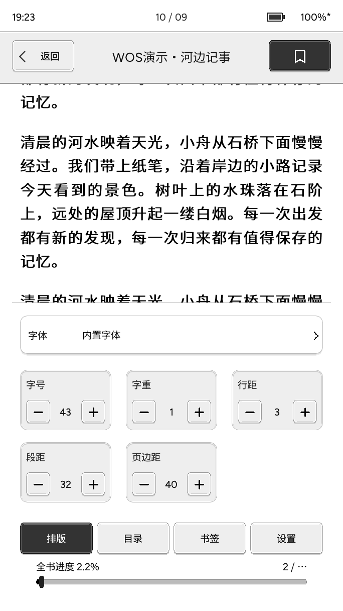
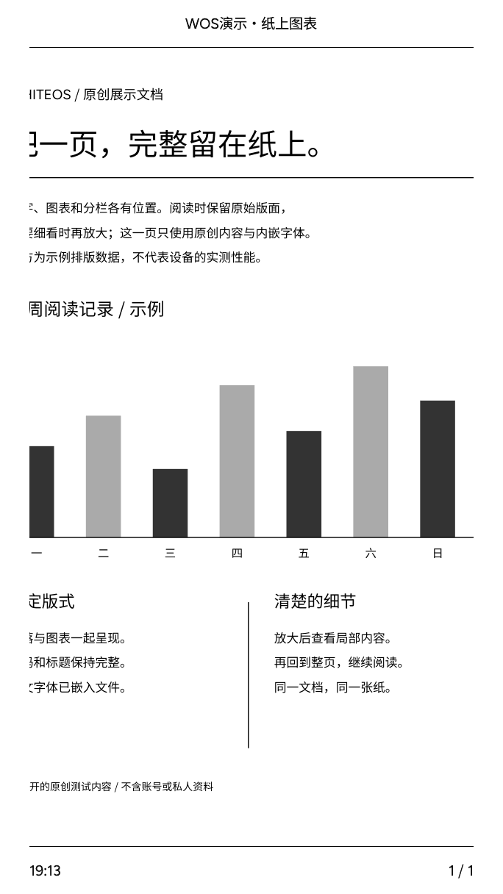
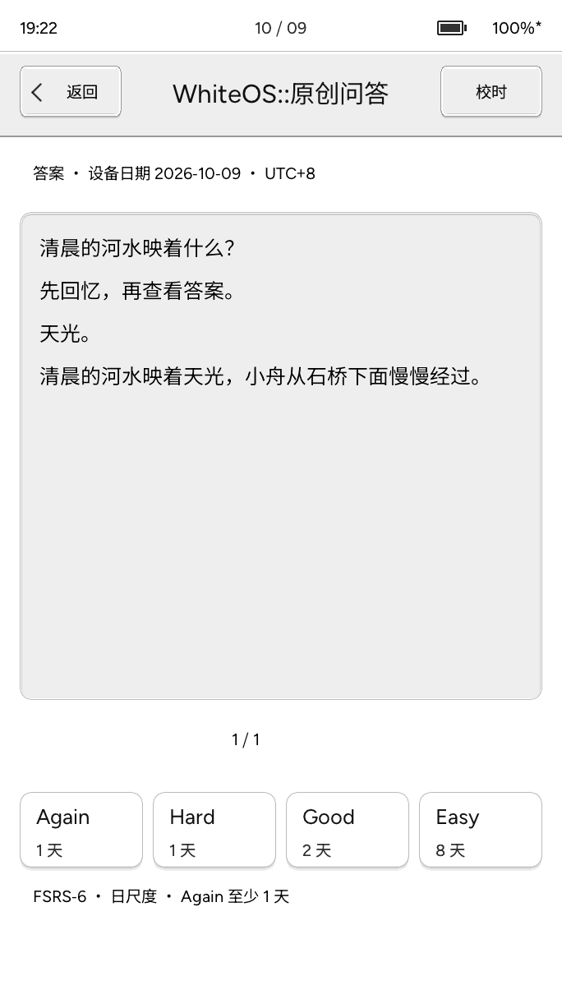

一份随手可查的说明书
把小纸
用顺手。
从放进第一本书，到找到舒服的排版。
这里用简单的话，把每一步讲清楚。
从第一次使用开始 ↗适用 whiteos 1.1.x整理于 2026.10.14
先认一下版本。这是 whiteos 产品固件的说明，不是原厂演示程序的说明。可在「设置 → 设备信息」查看版本。旧版本的入口和功能可能不同；配图为 2026 年 10 月 9 日采集的设备帧缓冲画面，部分菜单以当前设备为准。
先准备 TF 卡，再放入一本书，剩下的边用边熟悉。
准备好存储卡
本地书籍、字体、Anki 卡组和备忘录主要放在 TF 卡上。设备支持 FAT16、FAT32 和 exFAT。已有可用的卡可以继续使用，插卡不会自动格式化。
开机，认一下底栏
按电源键开机。底栏的「概览」是主页，「书架」用来找书，「应用」放着学习和日常工具，「设置」用来调整设备。主页的「继续阅读」会打开上次的书和已保存位置。
点开书，开始读
阅读时，左键上一页，右键下一页，中键打开阅读工具。读完短按电源键锁屏；下次再按，回到刚才的页面。
先做一件小事检查设备日期和时间。到「设置 → 设备信息 → 日期时间」调整后，点「保存到设备」。闹钟和 Anki 每日学习都依赖正确的设备时间。
记住三键，再学会从屏幕边缘滑动。
常用操作速查| 想做什么 | 怎么操作 |
|---|
| 用屏幕翻页 | 正文左侧点按上一页，右侧点按下一页；向左滑下一页，向右滑上一页。抬手后提交操作。 |
|---|
| 显示底部导航 | 从屏幕最底部向上滑。点正文或按中键可收起。 |
|---|
| 打开控制中心 | 从屏幕最顶部向下滑。向上滑回去，或点面板外的区域关闭。 |
|---|
| 调整阅读大小 | 双指捏合：TXT / EPUB 改变字号；PDF 改变页面比例。松手后呈现重新排好的页面。 |
|---|
| 快速回主页 | 长按中键约半秒；打开了弹窗或面板时，先关闭当前层。双指点按也可回主页，编辑或确认页面会先保护草稿。 |
|---|
| 锁屏 / 恢复 | 短按电源键锁屏，再短按恢复原页。墨水屏锁住后依然保留画面。 |
|---|
| 关机 | 长按电源键。设备先保存并结束正在使用文件的任务，再显示「已关机」。有未保存草稿时先回去保存或放弃。 |
|---|
三键会随场景变化：Anki 中键显示答案，文字输入页请用屏内键盘和返回按钮。正在加载时中键可能先取消当前任务。
手机适合用 Wi-Fi，电脑也可以把小纸当作 USB 磁盘。
方法一：Wi-Fi 网页传书
应用 → 文件导入 → 连接 Wi-Fi / 设备热点
- 在小纸上选择「连接 Wi-Fi」，让手机或电脑与小纸连接同一个网络；没有路由器时，选择「设备热点」，让手机连接屏幕显示的小纸热点。
- 连接成功后，扫描传书网页二维码，或在浏览器输入设备显示的网址。热点的连接码和网页地址码用途不同。
- 在网页选择「书籍」，上传 EPUB、PDF 或 TXT。字体、壁纸和词典也有各自的快捷入口。
- 等上传及写卡完成，在小纸上「停止传书」或返回。书架和字体会重新扫描。
连上热点，却显示没有互联网？这是正常的，小纸热点只用于局域网传文件。保持连接，再打开设备显示的网址。使用可信网络，传完关闭服务；同网设备也能访问文件管理页。
方法二：USB 磁盘
应用 → 文件导入 → USB 磁盘
- 插好 TF 卡，用能传数据的 USB 线连接电脑。
- 在小纸选择「USB 磁盘」，确认重启。电脑随后会看到整张 TF 卡。
- 把文件复制到下面对应的文件夹。磁盘模式期间，小纸暂时不运行阅读界面。
- 先在电脑上安全弹出磁盘。需要时按电源键退出磁盘模式并重启。直接拔线或按键不能代替电脑的安全弹出。
文件该放在哪里？
下面从 TF 卡根目录开始。用读卡器复制文件也遵循这个结构。
TF 卡 /根目录
├─ books /EPUB、PDF、TXT 书籍
├─ FONTS /TTF、OTF 字体
├─ WALLPAPERS /PNG、JPG、JPEG 壁纸
├─ DICT /dictionary.tsv 离线词典
└─ Anki /兼容旧版本的 .apkg 卡组
书籍直接放在 books 第一层，书架不递归查找子文件夹。FAT 文件系统下 BOOKS 与 books 等价。请保留系统生成的私有目录，它们存放阅读记录和缓存。
不用电脑，也能整理文件
应用 → 文件管理
点选文件查看详情，可预览 PNG / JPEG、复制、移动、重命名、删除或新建文件夹。复制和移动时先选择目标文件夹，再确认操作；同名目标不会被自动覆盖。
删除没有回收站。书籍改名或移动后按新路径识别，原阅读记录不会自动迁移。要保留续读位置，尽量保留原书名和路径。
放好文件后，书架就是日常读书的起点。
扫描与找书
底栏点「书架」，在本地分类查看图书。左上角「扫描」重新读取 books；右上角「传书」进入导入页。可以搜索、排序、翻页，再点封面打开。
1.1.1 起取消了本地书架固定 128 本上限，实际数量仍受可用内存约束。扫描失败会保留原书架。
接着上次读
概览页点「继续阅读」，会恢复上次已保存的位置。各本书分别保存进度；换一本书不会把它们混在一起。
阅读工具的「书签」保存重要位置，应用中的「书签」提供统一入口。想回到某一章，用阅读菜单的「目录」。
刚复制的书没有出现？检查文件是否直接放在 books，扩展名是否为 EPUB / PDF / TXT，再点「扫描」。文件放进其他目录，或放在子文件夹里，都不会出现在本地书架。
05MAKE IT COMFORTABLE
文字阅读与批注
EPUB 和 TXT 会根据你选的字号重新排版。
中键打开四个标签
- 排版：字号、字体、字重、行距、段距、边距与段首缩进。
- 目录：查看章节并跳转。TXT 根据可识别的章节标题生成目录，部分文本可能没有可用目录。
- 书签：保存或重访阅读位置，也能进入「文字批注」。
- 设置：阅读上下栏、标题字号、自动翻页、翻页动画与全刷频率等偏好。
换一种喜欢的字体
把 TTF / OTF 放入 TF 卡的 FONTS，停止传书后进入「排版 → 字体」选择。没有外部字体时仍可用内置字体。
双指捏合也能调字号。字号或间距变化后，页面会重排，页数可能改变；设备尽量以原阅读位置为起点。

阅读工具 · 排版标签
旧版截图，控件以设备为准翻页动画与清残影
「阅读工具 → 设置 → 翻页动画」可以开关动画，选择「水波纹 / 涟漪」和速度。动画在标准刷新档使用，快速档不运行动画。此设置只影响正文翻页。
墨水屏可能保留上一页的浅痕。可调整「全刷频率」，或在控制中心主动清残影。整屏短暂闪黑是清屏过程，和手机画面的刷新方式不同。
自动翻页可设置间隔；晃动翻页是可选功能，不需要时保持关闭。选词或打开面板时会暂停自动翻页。
想记住一句话，或者查一个词
- 在 TXT / EPUB 正文按住文字约半秒，再拖动扩大选区。
- 抬手后拖动两端把手，调整选中的内容。
- 点「标记」「收藏」或「划线」保存，点「查词」查询本地词典。
- 从选区工具的「批注」，或「阅读工具 → 书签 → 文字批注」查看记录。
选择限于当前可见页。每本书最多 32 条文字批注；批注保存在本机，微信读书批注也暂不上传云端。PDF 暂不支持这种文字选中。
离线词典怎么准备？
有 MDX、StarDict、CSV 或 JSON 词库时，打开 网页词典转换，选择文件并下载 dictionary.pdict，再从设备传书页的「传词典」上传。索引词典需要支持 .pdict 的词典优化固件，也可以复制到 DICT/dictionary.pdict。
准备 UTF-8 的 dictionary.tsv，放在 DICT。每行一个「词头 + 真实制表符 + 释义」，文件最大 32 MiB。设备按导入内容查找，不联网，也没有内置兜底释义。
hello 你好；问候语。
reader 读者；阅读器。
上面仅为格式示例。制作文件时使用 Tab 制表符，不能用两个字符 \t 代替。英文忽略大小写；中文精确匹配，英文没有自动词形还原。
FIXED-LAYOUT READING
PDF 阅读
PDF 保留原页面，字太小的时候就放大它。
书架打开 PDF 或 应用 → PDF
用中键打开 PDF 工具
- 适整页：看完整的一页，适合先看整体。
- 适宽：按屏幕宽度显示，正文通常更容易读。
- 缩放 / 平移：双指捏合调整比例，放大后移动查看其他区域。
- 跳页：输入目标页码，直接跳到那一页。
- 旋转 / 复位 / 强刷：调整方向、恢复视图或清残影。
PDF 和 EPUB 的区别PDF 缩放的是整张页面，不能像 EPUB 那样换字体后重排正文。扫描件、复杂图片或缺少内嵌中文字体的文档可能打开较慢、显示异常或超出容量限制。

PDF · 放大查看加密 PDF 会要求输入密码。PDF 的位置和视图由逐书记录保存；密码输入请用屏内键盘。
先下载授权内容，再离线读。同步位置时，由你确认方向。
第一次登录与下载
应用 → 微信读书 或 书架 → 微信读书分类 → 下载
准备网络和 TF 卡
先在 Wi-Fi 设置中连接并保存网络。微信读书的下载内容和书架缓存在 TF 卡。
扫码授权登录
打开微信读书管理入口，按设备提示用手机扫码并确认。会话过期且续约失败时，需要重新扫码。
选择书籍或章节下载
可按书下载，或在管理页选择章节及书籍。只下载当前账号授权可读的内容；目录显示可读，不代表正文已经下载。
回到书架离线阅读
书架的微信读书分类显示已下载书籍。点开后使用普通阅读工具和章节目录，已下载章节可以连续翻章，切分类和续读不会自动联网。
手机和小纸，怎么接上进度？
手机 / 云端现有阅读位置
⇄小纸 Pico本机位置与新增时长
- 在微信读书分类点击「同步」，点一本立即开始；也可点右上角「多选」，跨页勾选后点「同步所选」。只处理选中的书，同步留在选书页，底部显示进度和结果。
- 核对本机与云端位置。两端都读过时，选择希望保留的那一处；不要只凭进度更大就直接覆盖。
- 只想接着手机读，可选择读取云端进度；想把小纸的阅读位置带回云端，选择对应上传方向并确认。阅读时长独立处理，管理页的「时长同步」默认关闭，开启后在阅读期间后台上传新增时长。
- 等待设备显示结果。取消或失败不等于成功；有「未确认」报告时，不要把它当作已经上传。
同步是手动操作阅读位置通过所选书籍手动同步。导入 TXT 及部分 EPUB 支持下载与离线阅读，云端进度同步仍在适配。部分书籍、版本差异、权限、会话或正文映射问题可能让同步失败；看到「估算位置」时先核对实际落点，再决定是否采用。批注暂不云同步，当前授权正文图片也不随微信读书章节下载。
08A LITTLE EVERY DAY
Anki 学习
先回忆，再看答案，最后按实际记忆情况评分。
准备与导入卡组
- 在电脑 Anki 导出
.apkg，包含媒体，并勾选 Support older Anki versions（兼容旧版本）。 - 把文件放入 TF 卡的
Anki 文件夹。 - 进入「应用 → Anki 学习」，点右上角「导入」，选择文件。
- 导入成功后打开牌组，开始学习。建议先用一个小卡组确认模板兼容。
单包最多 128 MiB、2,000 张卡。复杂脚本、音视频模板及新压缩包格式不支持；.colpkg 也不能直接导入。同名已导入包不覆盖，改名重新导入会产生独立副本。
一次学习，只有三步
看问题 → 想答案 → 显示答案后评分。中键可显示答案；左右键翻当前卡片的内容页，评分请用屏幕上的按钮。
显示答案不会写入学习记录，评分保存成功才生效。单选题由你核对答案，设备不会替你自动判分。

Anki · 答案与评分每日限额与学习统计
默认每日新卡 20 张、复习 200 张，可在牌组列表的「每日限额」修改。同一导入包的牌组共享每日额度，到期复习优先。
「学习统计」显示当天和累计数据。小纸使用 FSRS-6 的按天复习安排；即使选择 Again，也至少安排到下一天，没有几分钟后重学的步骤。
这是一份独立的学习进度不登录或同步 AnkiWeb，也不迁移电脑 Anki 的旧复习历史。设备从新卡开始记录；每天按设备 UTC+8 日期换日。时间错误会暂停评分，请先校时再进入牌组。
09WRITE SOMETHING DOWN
备忘录与画板
记一点文字，画一张草图。完成后记得保存。
文字备忘录
应用 → 备忘录 → 新建文字
使用屏内键盘输入英文、数字或中文拼音。文字从末尾追加；删除键移除末尾字符。可以上下查看内容，或收起键盘扩大纸面。
点「保存」才写入 TF 卡。还有拼音待确认时，保存会先选候选字，核对后再点保存。最多 32 条，每条 767 个 UTF-8 字节，中文通常占多个字节。
画板
备忘录 → 打开画板
选择画笔或橡皮，用手指绘画；支持三种笔宽和上一笔撤销。清空需确认，清空后仍可撤销。
当前只有一张独立画板，可以保存并继续编辑，不支持多画板或导入图片。点「保存」才替换原存档。
草稿还没保存离开编辑页会询问继续编辑或放弃。锁屏可保留本次草稿，重启或掉电会丢失未保存内容。传书和编辑不能同时使用存储卡，保存失败时先保留草稿并检查卡状态。
阅读习惯、屏幕和锁屏，各自有对应的设置入口。
显示与控制中心
「设置 → 显示」调整刷新档位、灰阶和反色。标准档适合日常阅读，快速档偏向响应速度，清晰档偏向清理效果；有残影时可主动强刷。
从屏幕顶部下滑打开控制中心，可快捷进入 Wi-Fi、蓝牙翻页器、声音、刷新和省电等项目。省电开关允许 CPU 空闲时降频，实际续航提升没有固定承诺。
Wi-Fi 与蓝牙翻页器
Wi-Fi
「设置 → Wi-Fi」选择网络并输入密码，连接成功后保存。这里是配网入口；要传文件，再打开「文件导入」。正常阅读不保留 Wi-Fi 会话。
蓝牙翻页器
让翻页器进入配对模式，在「设置 → 蓝牙翻页器」或控制中心「蓝牙」搜索并点选。支持无需 PIN 的 BLE HID 设备，不是所有蓝牙遥控器都兼容；断开后需手动重连。
翻页器接口已实现，实物兼容与配对验证仍待完成。
多久不操作，自动锁屏？
设置 → 休眠
可选关闭、1、3、5、10 或 30 分钟。默认关闭。触摸和操作重新计时；加载、传书、配网或闹钟响铃期间暂停计时。自动锁屏后按电源键回到原页。
换一张锁屏壁纸
设置 → 锁屏壁纸
- 把 PNG / JPG / JPEG 放入
WALLPAPERS，建议使用单文件不超过 2 MiB 的普通图片。 - 进入壁纸设置并选择图片，等待预览。
- 1.1.1 起支持屏幕比例裁剪：单指拖动，双指或按钮缩放，也可点居中。
- 点「确认裁剪并应用」，等保存完成。原图片不会被改写。
调整时黑白点阵是快速预览，确认后才生成灰度图。图片不支持或无法读取时，设备回退默认时钟锁屏；也可手动选择「使用默认时钟锁屏」。
声音与旋律
设置 → 声音与旋律
开启或关闭系统提示音，试听提示音和短旋律。点「停止播放」或返回取消余下音符。控制中心的声音开关与这里共用设置，普通翻页保持安静。
底栏自定义
到「设置 → 底栏自定义」，选择常用入口放到底栏，也可以移除自定义项。标注「未安装」的自定义应用只是预留位置，不能当作已可用应用。
设备信息与校时
「设置 → 设备信息」查看运行版本、时间、电量等。进入「日期时间」修改后点「保存到设备」，显示采用 UTC+8。返回会放弃未保存的时间草稿。
WHEN YOU NEED A HAND
遇到问题时
先查这一小页，很多问题都能少绕一步。
复制了文件，书架还是没有新书？
确认 TF 卡已挂载，文件在 books 第一层，格式为 EPUB / PDF / TXT。点书架「扫描」。文件仅上传成功并不代表阅读器支持该格式。
查看目录速查 ↗手机连上小纸，但传书网页打不开？
确认小纸停留在传书页，手机仍连接小纸热点或相同局域网。打开设备显示的实际地址，用 http://；不要根据旧截图猜地址。热点没有互联网，手机自动切回其他网络时需重新连接。
查看传书步骤 ↗显示 TF 卡不可用，或者保存失败？
先停止文件操作，不要在写入中拔卡。保留重要数据，检查卡是否插好、空间是否足够，再按设备提示重新读取。反复报错时，在电脑备份并检查文件系统；不要把格式化作为第一步。
换字体后出现方框，或者 TXT 乱码？
字体可能缺少需要的字形，先换回内置字体。当前版本已改善 TXT 编码识别；仍异常时，在电脑确认并转换为 UTF-8 文本。跨章节后菜单方框也可能与旧版资源问题有关，请先核对固件版本。
某一本 EPUB / PDF 打不开？
先试另一本较简单的书，区分文件问题和设备状态。检查文件是否完整、PDF 是否需要密码；复杂图片、特殊 EPUB 排版、缺字体或容量超限都可能失败。退出当前书后重试，必要时在电脑重新导出较简单版本。
屏幕有浅痕，或者锁屏后画面一直不消失？
浅痕是墨水屏残影，可强刷或调整全刷频率。清屏时闪黑是正常刷新过程。锁屏乃至关机后保留最后画面，也是墨水屏特性，单凭静止画面不能判断是否还在运行。
微信读书同步失败，是否已经上传？
以设备结果为准。「失败」「待处理」或「未确认」都不能当作成功。检查网络、会话、授权和同步预览；若两端进度不同，先核对再选择方向。部分书籍无法可靠映射位置，当前接入不能保证所有书都同步成功。
查看同步说明 ↗Anki 提示格式不支持？
回电脑 Anki 重新导出 .apkg，勾选兼容旧版本与包含媒体；仅改扩展名或 ZIP 内的数据库名不能转换格式。复杂模板或超过容量限制也会拒绝导入。
查看导入步骤 ↗Anki 要求校时，不能继续评分？
进入「设置 → 设备信息 → 日期时间」，确认日期和时间并保存，然后重新打开牌组。时钟不可用或日期倒退时会暂停学习，避免错误发放每日额度。选择 Again 后至少次日复习，也是当前按天调度的正常行为。
关了提示音，为什么闹钟仍响？关机后会响吗？
闹钟声音独立于普通系统提示音，停用闹钟请关闭对应记录。锁屏浅睡支持提醒；完全关机、掉电和 USB 磁盘模式不运行正常闹钟调度，不能保证响铃。
怎样安装或更新 whiteos？
先查看当前版本，再进入 whiteos 站点的安装页，按页面说明区分首次安装和已有固件更新。保留重要 TF 卡内容；刷写时使用适合小纸 Pico 的正式包，并等待工具完成校验。在线下载失败时，从 GitHub Release 的 Assets 下载 whiteos-X.Y.Z-full.bin，回烧录页选择完整包；已有 whiteos 选“固件更新”，首次安装选“全新烧录”。不要选择应用文件 whiteos.bin 或 Source code。安装后的启动检查以实际设备为准。
打开 whiteos 安装入口 ↗
ONE MORE PAGE
熟悉之后，
就安心读吧。
这份说明书可随时搜索，也可以打印留存。
遇到版本差异，请以设备上的提示和正式发布说明为准。
回到说明书开头 ↑